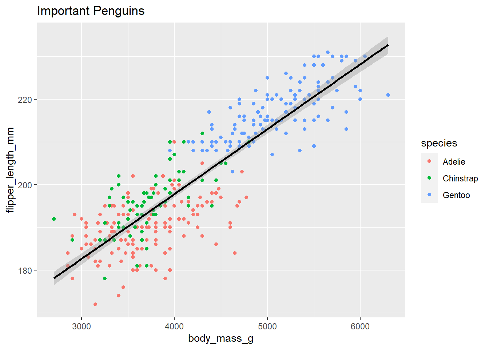
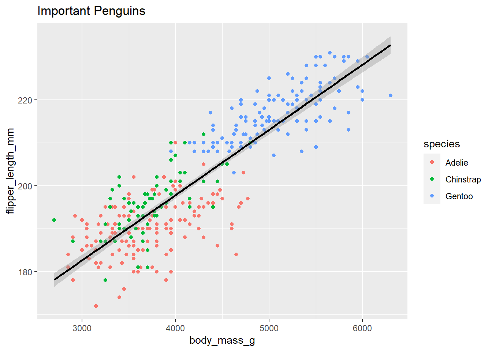

{kind=link}
penguin_plot <- penguins %>%
na.omit() %>%
ggplot(aes(x = body_mass_g, y = flipper_length_mm)) +
geom_point(aes(color = species)) +
labs(title = "Important Penguins") +
geom_smooth(method = "lm", color = "black")
penguin_plot
RStudio 2022.07.1 comes with support for the Visual Mode of editing Quarto and other markdown-based files!
This is a WYSIWYM editor, meaning:
WYSIWYM is an acronym that stands for What you see is what you mean. This was positioned to not be confused with WYSIWYG (what you see is what you get). The idea behind WYSIWYG is to display text on screen in much the exact same way as they will appear when printed on paper.
WYSIWYM means that it can be translated differently, (where) the same content can lead to different output formats .
The Visual Markdown mode in RStudio allows for editing in plain text or visual mode, along with a visual representation of what it will actually look like while maintaining the ability to output to HTML or PDF.
Full guide guide from the RStudio dev team that covers all the major topics and sub topics of the new features.
| OS | Download | Size | SHA-256 |
|---|---|---|---|
| Windows 10/11 | RStudio-2022.07.1-554.exe(opens in a new tab) |
190.14 MB | 5ab6215b |
| macOS 10.15+ | RStudio-2022.07.1-554.dmg(opens in a new tab) |
221.04 MB | 7b1a2285 |
| Ubuntu 18+/Debian 10+ | rstudio-2022.07.1-554-amd64.deb(opens in a new tab) |
132.91 MB | 74b9e751 |
| Ubuntu 22 | rstudio-2022.07.1-554-amd64.deb(opens in a new tab) |
145.33 MB | 92f2ab75 |
| Fedora 19/Red Hat 7 | rstudio-2022.07.1-554-x86_64.rpm(opens in a new tab) |
103.29 MB | 0fc15d16 |
| Fedora 34/Red Hat 8 | rstudio-2022.07.1-554-x86_64.rpm(opens in a new tab) |
149.77 MB | 0c4ef334 |
| OpenSUSE 15 | rstudio-2022.07.1-554-x86_64.rpm(opens in a new tab) |
133.76 MB | 45f277d0 |
Markdown documents can be edited in either source or visual button at the top-right of the document toolbar (or alternatively the ⌘ + ⇧ + F4 keyboard shortcut):

Please see long section of the guide.
If you have a workflow that involves editing in both visual and source mode, you may want to ensure that the same markdown is written no matter which mode edits originate from. You can accomplish this using the canonical option. For example:
---
title: "My Document"
editor_options:
markdown:
wrap: 72
references:
location: block
canonical: true
---The editor toolbar includes buttons for the most commonly used formatting commands:

Additional commands are available on the Format, Insert, and Table menus:


| Command | Keyboard Shortcut | Markdown Shortcut |
|---|---|---|
| Bold | ⌘ B |
**bold** |
| Italic | ⌘ I |
*italic* |
| Code | ⌘ D |
`code` |
| Link | ⌘ K |
<href> |
| Heading 1 | ⌥⌘ 1 |
# |
| Heading 2 | ⌥⌘ 2 |
## |
| Heading 3 | ⌥⌘ 3 |
### |
| R Code Chunk | ⌥⌘ I |
```{r} |
You can also use the catch-all ⌘/ shortcut to insert just about anything. Just execute the shortcut then type what you want to insert. For example:
Use the bullet
Or numbered
Here’s a link - how to turn into an image?
EXAMPLE LINK: https://rstudio.github.io/visual-markdown-editing/images/visual-editing-omni-list.png
LaTeX equations are authored using standard Pandoc markdown syntax (the editor will automatically recognize the syntax and treat the equation as math). When you aren’t directly editing an equation it will appear as rendered math:
\[ P(E) = {n \choose k} p^k (2-p)^{n-k} \]

You can include footnotes using the Insert -> Footnote command (or the ⇧ ⌘ F7 keyboard shortcut). Footnote editing occurs in a pane immediately below the main document:1 <- NOTE THE FOOTMARK

You can insert table using the Table menu. You can then use either the main menu or a context menu to insert and delete table rows and columns:

you can create a new list by just typing - or 1. at the beginning of an empty paragraph. To add items to the list, just press Enter within a list item. To exit the list, press Enter within an empty list item.
| Empty Item (enter to exit list) | Tab (add sublist) | Backspace (add block) |
|---|---|---|
 |
 |
 |
Can use either :grinning: 😀 or Insert -> Special Characters -> Emoji ...
Unicode can also be inserted w/ Insert -> Special Characters -> Unicode ...
Quarto supports bibliographies in a wide variety of formats including BibTeX and CSL. Add a bibliography to your document using the bibliography YAML metadata field. For example:
---
title: "My Document"
bibliography: references.bib
link-citations: true
---You insert citations by either using the Insert -> Citation command or by using markdown syntax directly (e.g. [@cite]).
Citations go inside square brackets and are separated by semicolons. Each citation must have a key, composed of ‘@’ + the citation identifier from the database, and may optionally have a prefix, a locator, and a suffix. The citation key must begin with a letter, digit, or _, and may contain alphanumerics, _, and internal punctuation characters (:.#$%&-+?<>~/). Here are some examples:

(Rottman-Sagebiel et al. 2018)
Source code which you include in an Quarto document can either by for display only or can be executed by knitr as part of rendering. Code can furthermore be either inline or block (e.g. an Rmd code chunk).
To display but not execute code, either use the Insert -> Code Block menu item, or start a new line and type either:
``` (for a plain code block); or
```<lang> (where <lang> is a language) for a code block with syntax highlighting.
Then press the Enter key. To display code inline, simply surround text with backticks (`code`), or use the Format -> Code menu item.
library(tidyverse)
library(palmerpenguins)
penguins %>%
ggplot(aes(x = body_weight_g, y = flipper_length_mm, color = species)) +
geom_point()To insert an executable code chunk, use the Insert -> Code Chunk menu item, or start a new line and type:
```{r}
Then press the Enter key. Note that r could be another language supported by knitr (e.g. python or sql) and you can also include a chunk label and other chunk options.
To include inline R code, you just create normal inline code (e.g. by using backticks or the ⌘ D shortcut) but preface it with r. For example, this inline code will be executed by knitr: 2023-01-01. Note that when the code displays in visual mode it won’t have the backticks (but they will still appear in source mode).
penguin_plot <- penguins %>%
na.omit() %>%
ggplot(aes(x = body_mass_g, y = flipper_length_mm)) +
geom_point(aes(color = species)) +
labs(title = "Important Penguins") +
geom_smooth(method = "lm", color = "black")
penguin_plot
library(gt)
penguins %>%
na.omit() %>%
select(species, bill_length_mm, body_mass_g) %>%
head() %>%
gt()| species | bill_length_mm | body_mass_g |
|---|---|---|
| Adelie | 39.1 | 3750 |
| Adelie | 39.5 | 3800 |
| Adelie | 40.3 | 3250 |
| Adelie | 36.7 | 3450 |
| Adelie | 39.3 | 3650 |
| Adelie | 38.9 | 3625 |
library(reactable)
penguins %>%
filter(species == "Adelie") %>%
na.omit() %>%
select(species, bill_length_mm, body_mass_g) %>%
reactable(defaultPageSize = 5)Very fancy footnote to this portion↩︎
Comments
When reviewing an Quarto document you often want to provide inline comments with suggested revisions. This is possible in Quarto using HTML comments (which are ignored by all output formats). Visual mode includes a command for inserting HTML comments as well as special highlighting treatment to easily parse out editing comments from surrounding text.